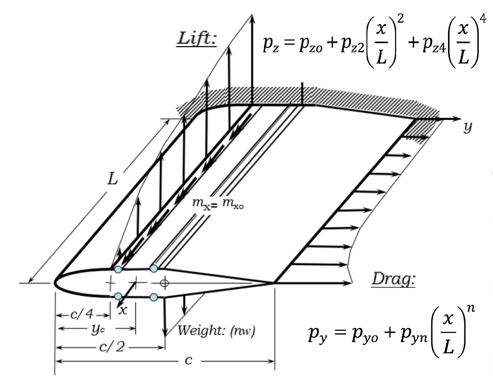
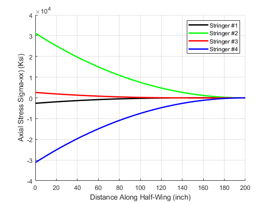
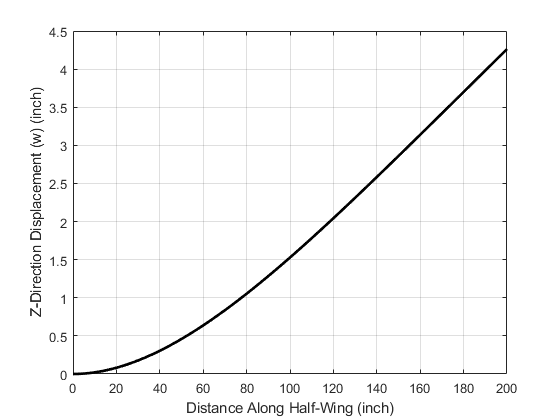

PARAMETRIC WING STRUCTURAL ANALYSIS
Modern wing structures must balance stiffness, weight, and increasingly complex loading environments. I developed a parametric structural model to evaluate wing deflection and internal loads under combined aerodynamic and discrete forcing.
The tool enables configurable spar placement, distributed lift and weight modeling, and user-defined point forces and moments to simulate realistic aircraft scenarios such as engine loads or control surface effects. The goal was to better understand load paths and structural trade-offs early in the design process.
While the primary focus was full wing behavior, preliminary thin-walled spar studies were also conducted to inform cross-section assumptions used in the higher-level model.

Parametric wing model used to study deflection, load distribution, and spar placement sensitivity.
BUILDING THE STRUCTURAL FRAMEWORK
The wing was discretized spanwise and modeled using beam theory combined with thin-walled shear flow relations. Aerodynamic loading was applied as a distributed lift profile, allowing computation of internal shear forces, bending moments, and torsional moments along the span.
The MATLAB implementation solved for node displacements, twist distribution, and shear flow around the closed section. Special attention was given to maintaining numerical stability and physical consistency across the span.

Axial stress distribution along the four wing stringers, illustrating how bending loads are carried by the primary structural members.
DEFLECTION, TWIST, AND SHEAR FLOW INSIGHTS
Results showed the expected spanwise growth in bending deflection and highlighted the coupling between lift loading and torsional response. Shear flow distributions around the wing box were consistent with thin-walled closed-section theory.
Parametric variations in material stiffness and geometric properties demonstrated clear sensitivity in tip deflection and twist, reinforcing the importance of structural efficiency in wing design.

Spanwise deflection results illustrating bending growth toward the wing tip.
KEY LESSONS FROM WING STRUCTURAL MODELING
- Closed-section wing boxes exhibit strong coupling between bending and torsion.
- Shear flow continuity is critical for accurately predicting torsional stiffness.
- Spanwise discretization must balance numerical stability with computational efficiency.
- Material and geometric changes significantly impact tip deflection and twist.
- Foundational spar studies are valuable, but full wing modeling provides more realistic structural insight.